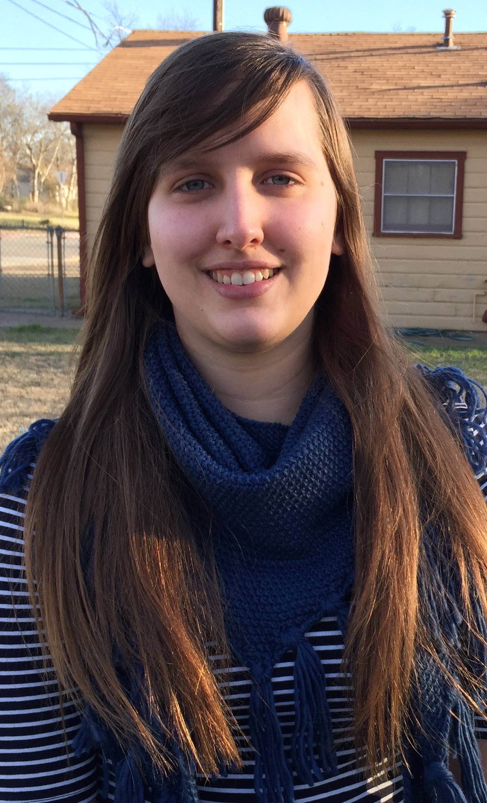

I'm a [ front-end web developer ], [ senior ] at Austin College, and doodle [ master ].
My majors are Environmental Studies and German. My minor is Japanese. In most of my free time I like to code the front end for various professional websites. I am also interested in graphic design, especially for icons.